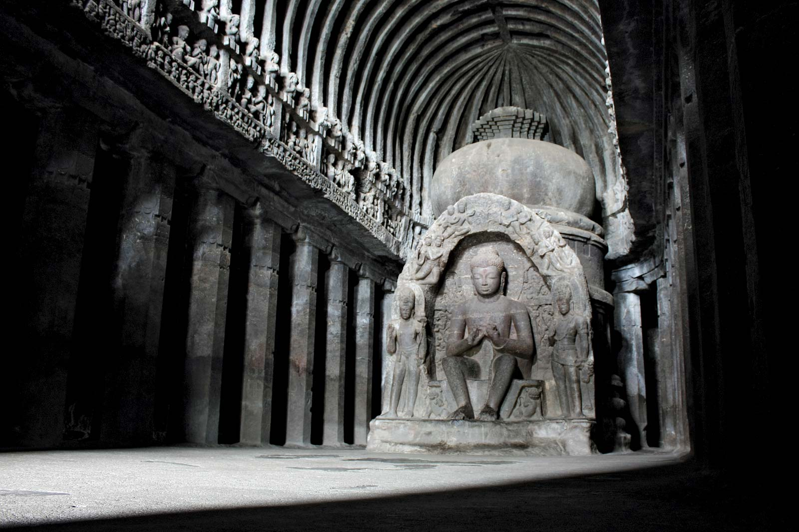

Ellora Caves

Facts about Ellora Caves:
- The famous monumental Ellora Caves were built between the 5th and 10th centuries by Buddhist, Jain, and Hindu monks, and make for an excellent excursion from Mumbai, some 300 kilometers to the west.
- Now a UNESCO World Heritage Site, this remarkable collection of 34 carved monasteries, chapels, and temples-12 of them Buddhist, 17 Hindu, and five belonging to the Jain faith-were built in close proximity to each other, a reflection of the religious tolerance that existed during this period of Indian history.
- Of the Buddhist monastery caves, highlights include a number of shrines featuring carvings of Buddha and saints dating from the 5th to 7th centuries, as well as the stunning Carpenter's Cave, considered one of the finest in India.
- The Hindu caves are much more complex and were carved from the top down, so scaffolding was not necessary. Of these, the best is the Kailasa Temple, an enormous rock-cut temple representing Mount Kailasa and requiring the removal of 200,000 tons of rock.